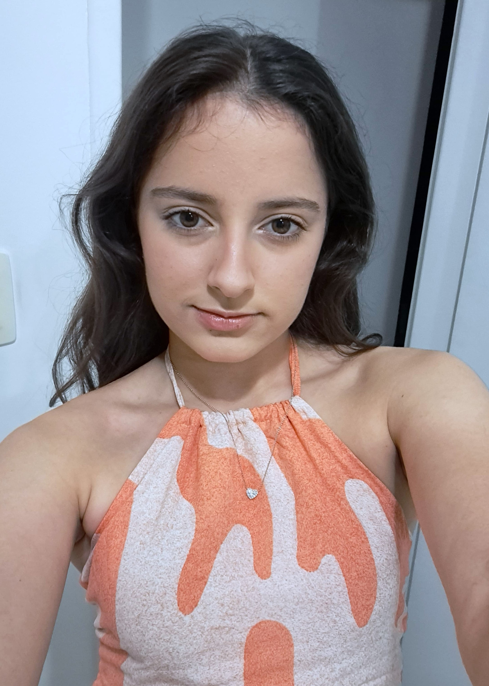

Olá, eu sou Louise Pessoa
Estudante de Ciência da Computação
Nasci em 2007 em Recife-PE (Brasil)
Tenho ensino médio completo pela Rede Damas Educacional e estou no 1º período do meu curso no CESAR School.
Sou apaixonada por tecnologia (principalmente programação), resolução de problemas e gestão.
Meus atuais interesses profissionais são:
- Cibersegurança;
- IA (com destque para Aprendizado de Máquina)
- Desenvolvimento de Jogos.
Gosto de estudar pelo beecrowd, W3Schools, StackOverflow e/ou pedindo sugestões para IA's de programas ou projetos para praticar. Também utilizo o VSCode como editor de código.
Acredito que, com os indivíduos e as motivações certas, a tecnologia pode ter um impacto muito mais positivo na vida das pessoas, inclusive na educação. Por isso, procuro oportunidades para participar de projetos impactantes positivamente para todos os envolvidos.